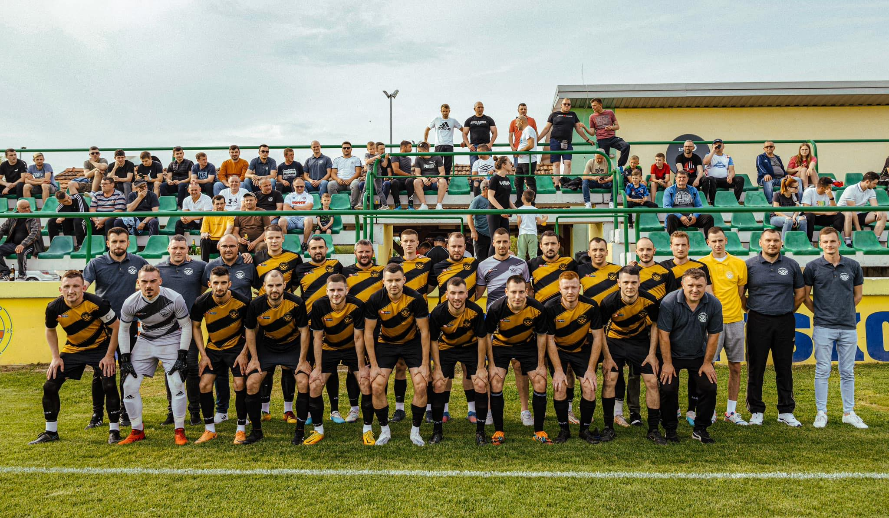

O NAMA
Športski nogometni klub Ratar Piškorevci osnovan je 1925. godine i trenutačno se natječe u 1. ŽNL Osječko-baranjskoj.

POVIJEST
Klub je osnovan 1925. godine pod imenom NK Jadran.
Osnivač kluba bio je Ivan Debogović.
Osnivanjem KUD-a Zora u Piškorevcima 1927. godine,
ime kluba iste godine promijenjeno je u NK Zora,
da bi 1947. godine inicijativom Ive Anđelića,
Marijana Anušića i Branimira Maštrovića klub dobio ime
ŠNK Ratar koje je ostalo do danas.
USPJESI
Osvojeno 1. mjesto u 2. ŽNL NS Đakovo u sezoni 2016./17.
Osvajanjem prvog mjesta klub je kao prvak iz 2. ŽNL NS Đakovo igrao kvalifikacije za 1. ŽNL
s prvakom iz 2. ŽNL NS Našice, NK Motičinom.
Prva utakmica u Motičini završila je 2:1 za domaćina, a u uzvratu je Ratar bio bolji s 3:1, ukupno 4:3.
Najviši stupanj u kojem se natjecao bila je 3. HNL - Istok, u razdoblju od 1994. do 1998. Sezone 2021./22. klub osvaja Kup NS Đakovo.